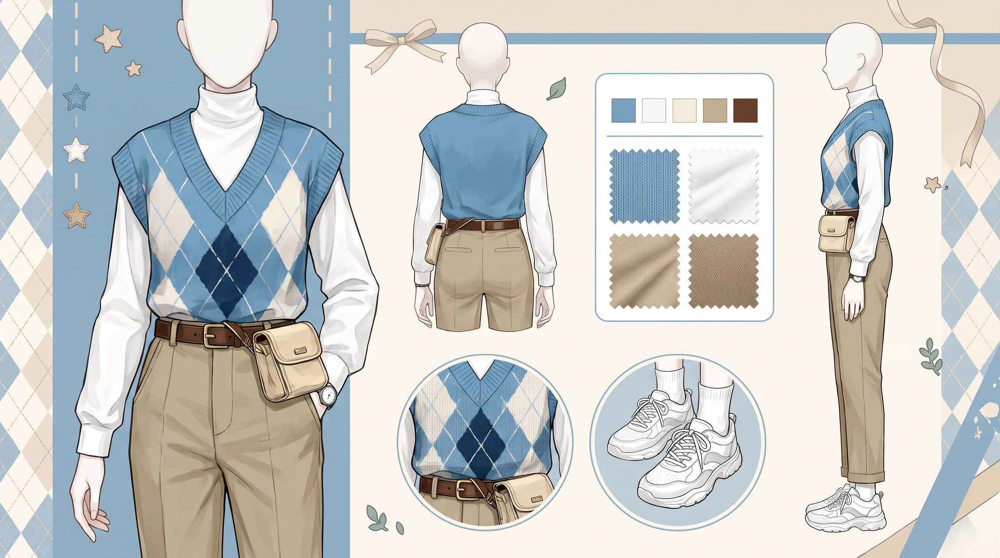
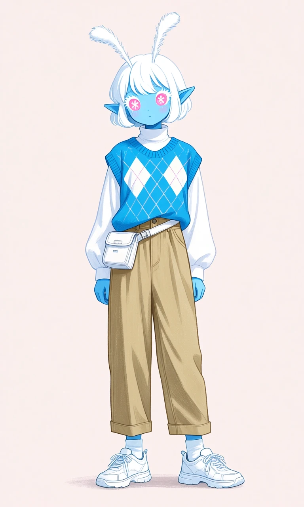
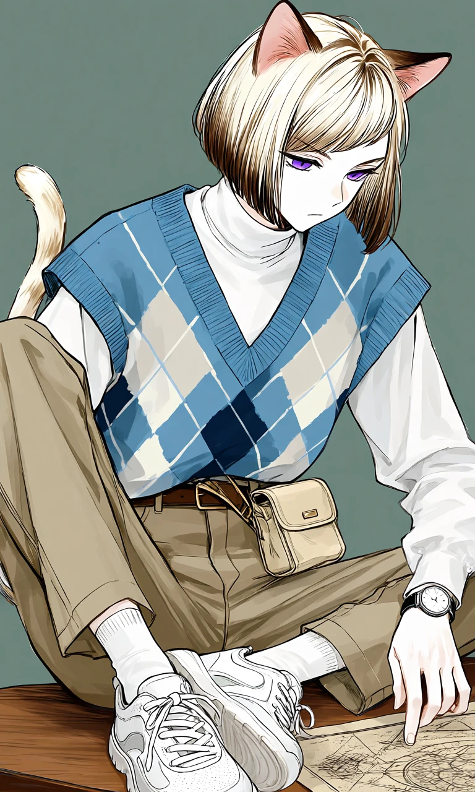

Argyle Office Hours

Outfit Prompt
Outdated casual fashion, old-fashioned comfortable everyday clothing, slightly awkward retro preppy aesthetic, neat practical styling, powder blue, white, beige, and khaki color palette.
A powder-blue knitted sweater vest with a classic V-shaped neckline, ribbed armholes, and a ribbed waistband. The front features a traditional argyle diamond pattern in white, pale gray, and muted navy blue, with thin intersecting diagonal lines. The sweater vest has a slightly boxy silhouette and a comfortably loose fit.
Underneath is a plain white long-sleeved turtleneck shirt with a tall folded ribbed collar, fitted sleeves, and smooth cotton fabric. The turtleneck is tucked neatly into the trousers.
Loose straight-leg khaki trousers with a noticeably high waist, sitting slightly above the natural waistline. The trousers have a relaxed, old-fashioned fit, soft front pleats, practical side pockets, and straight legs extending to the ankles. Slightly stiff cotton twill fabric with neat pressed creases down the front.
A simple medium-brown leather belt with a small rectangular brass buckle.
Plain white crew socks with ribbed cuffs, visible slightly above the shoes.
Chunky old-fashioned white athletic sneakers with thick rounded soles, wide toe boxes, white laces, and subtle pale-gray panels. The sneakers have a practical vintage design rather than a trendy modern silhouette.
A small beige utility belt pouch attached securely at the waist, featuring a rectangular shape, simple flap closure, and practical snap button.
A modest silver wristwatch with a small round face and plain black leather strap.
Neat, comfortable, slightly unfashionable casual clothing, old-fashioned preppy style, practical everyday outfit, deliberately outdated fashion choices, charming retro simplicity.
Outfit Examples



